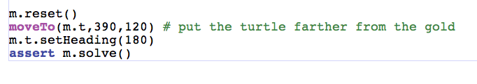

CSI 106 Muhlenberg College - Michael Toth
Page 17
|
All we need to do is consider the case where the turtle is in front of
the gold. We also need to add the yellow condition to
colorInFront to make this work if you haven't already. |
 |
|
Now lets put the turtle a little farrther away from the cheese and try to solve. |
 |